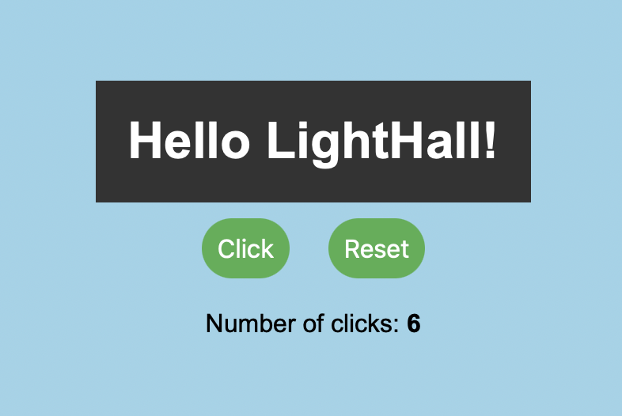

Lighthall Clicks
Introducing "Lighthall-Clicks".
A web application that allows users to click on a button and it will add it to the counter, as well as giving the location of the user. This project was built for Lighthall Competition that I was enrolled in, this was the first stage of the competition.
For this project, I used Firebase to keep a database of the clicks that a user has inputted. So the counter would not reset if the user refreshes the page.
Website Link: Lighthall Clicks.
Technologies Used: HTML, CSS, Firebase, geolocation